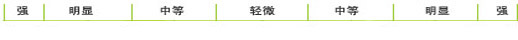

#ISTJ 检查员型——细致、谨慎地执行好现有规则#
日期: 2017/1/22
一、你的MBTI图形
MBTI倾向示意图(类型：ISTJ 总倾向：37.8)
| 外向（E） |
100%
|
（I）内向 |
| 实感（S） |
14.29%
|
（N）直觉 |
| 思考（T） |
14.29%
|
（F）情感 |
| 判断（J） |
14.29%
|
（P）知觉 |
|  |
- 倾向示意图表示四个维度分别的倾向程度。从中间往两侧看，绿色指示条对应下面坐标的哪个区间。
- 请留意收藏报告地址，或复制报告内容到自己的博客。
二、基本描述
ISTJ (Introverted Sensation with Thinking)
代表人物： 艾森豪威尔 美国总统和将军
我们最终还是要踏上这条最漫长最艰难的道路。虚无的冠冕，巧言令色，一切徒有其表的东西都会被时间证明是一无是处的。
才储分析：您的性格类型倾向为“ ISTJ ”(内向 实感 思维 判断 倾向度： I100 S57 T57 J57 不假思索指数：12)
沉静，认真；贯彻始终、得人信赖而取得成功。讲求实际，注重事实和有责任感。能够合情合理地去决定应做的事情，而且坚定不移地把它完成，不会因外界事物而分散精神。以做事有次序、有条理为乐—不论在工作上， 家庭上或者生活上。重视传统和忠诚。
ISTJ型的人是严肃的、有责任心的和通情达理的社会坚定分子。他们值得信赖，他们重视承诺，对他们来说，言语就是庄严的宣誓。 ISTJ型的人工作缜密，讲求实际，很有头脑也很现实。他们具有很强的集中力、条理性和 准确性。无论他们做什么，都相当有条理和可靠。他们具有坚定不移、深思熟虑的思想，一旦他们着手自己相信是最好的行动方法时，就很难转变或变得沮丧。ISTJ型的人特别安静和勤奋，对于细节有很强的记忆和判断。 他们能够引证准确的事实支持自己的观点，把过去的经历运用到现在的决策中。他们重视和利用符合逻辑、客观的分析，以坚持不懈的态度准时地完成工作，并且总是安排有序，很有条理。他们重视必要的理论体系和传统 惯例，对于那些不是如此做事的人则很不耐烦。ISTJ型的人总是很传统、谨小甚微。他们聆听和喜欢确实、清晰地陈述事物。ISTJ型的人天生不喜欢显露，即使危机之时，也显得很平静。他们总是显得责无旁贷、坚定不变 、但是在他们冷静的外表之下，也许有强烈却很少表露的反应。
您适合的领域有：工商业领域、政府机构 金融银行业、政府机构、技术领域、医务领域
您适合的职业有：
- 审计师
- 会计
- 财务经理
- 办公室行政管理
- 后勤和供应管理
- 中层经理
- 公务（法律、税务）执行人员
- 银行信贷员
- 预算分析师
- 保险精算师
- 税务经纪人
- 税务检查员
- 机械、电气工程师
- 计算机程序员
- 数据库管理员
- 地质、气象学家
- 法律研究者
- 律师
- 外科医生
- 药剂师
- 实验室技术人员
- 牙科医生
- 医学研究员
- 信息总监
- 电脑编程员
- 证券经纪人
- 会计
- 文字处理专业人士
三、气质类型
根据大卫.凯尔西（David Keirsey）气质与性情理论，你属于“传统主义者”，下面是对“传统主义者”的描述：
“传统主义者”相信事实、已证实的数据、过去的经验和“五官”所带给他们的信息，喜欢有结构有条理的世界，喜欢做决定，是一 种既现实又有明确目标的人。
“传统主义者”是最传统的一类人，他们坚定、可靠、可信。他们重视法律、秩序、安全、得体、规则和本分。他们被一种 为社会服务的动机所驱使。他们尊重权威、等级制度和权力，而且一般具有保守的价值观。他们很有责任感，而且经常努力去做正确 的事情，这使他们可以信赖和依靠。
“传统主义者”需要有归属感，需要服务于别人，需要做正确的事情。他们注重安稳、秩序、合作、前后一致和可靠，而且他们严肃 认真，工作努力。“传统主义者”在工作中对自己要求十分严格，而且他们希望别人也是如此。“传统主义者”喜欢那些与他们一样 具有奉献精神、尊重权威和尽自己的本分的同事。
“传统主义者”往往是组织机构的主要支持者，不论他们是在领导层还是处于被领导的位置上。他们最常扮演的角色就是“稳定器” ——传统和现状的维护者。 大多数“传统主义者”（不论他们是属于什么判断偏好）最喜欢的是组织结构稳定、清楚、目标明确 的岗位，不喜欢处在不断变化和杂乱状况之中的职位或组织。
“传统主义者”包括思维型传统主义者和情感型传统主义者，这两种传统主义者之间又有很明显的不同。情感型传统主义者常常不象 思维型传统主义者那样明显地表现出传统主义者的一般特征。在做决定时，情感型传统主义者把与别人的关系和人放在首要位置，本 能地努力寻求与他人更和睦的关系，同时不断寻找着使他们能够通过有形的方式帮助他人的机会。
对于不同的性格类型而言，没有“好”与“坏”之分，每一个人都是一个独一无二的个体，都有其特别的优势和劣势，但问题的关键 在于如何认识这些优势和劣势。基于MBTI模型职业规划的核心法则是：“扬长避短”，学会了这一点将会影响到你的成败及你对工作的正确选择。
对你的总体描述
1. 实际，有条理，认真仔细。
2. 注重规则、政策、契约、例行习惯和时间要求。
3. 一旦他们承诺一件事情，总会坚持完成它。
4. 在跟进、规范方面做得很好。
5. 以第一次和每一次都做了正确的事情为荣。
6. 对需要注意的事情有敏锐的洞察力。
7. 善于尽可能有效地利用现有资源完成工作。
你潜在的弱点
1. 容易只看到事情有黑和白两种情况，而看不到中间的灰色地带。
2. 可能不能很快地做出改变和适应。
3. 有些此类型成员不擅长变通、缺乏想象力。
四、优势与劣势
ISTJ的特质： 检查员型——细致、谨慎地执行好现有规则
优势：
你是一个认真而严谨的人，勤奋而负有责任感，认准的事情很少会改变或气馁，做事深思熟虑，信守承诺并值得信赖。
你依靠理智的思考来做决定，总是采取客观、合乎逻辑的步骤，不会感情用事，甚至在遇到危机时都能够表现得平静。
你谨慎而传统，重视稳定性、合理性；你天生独立，需要把大量的精力倾注到工作中，并希望其它人也是如此，善于聆听并喜欢将事情清晰而条理的安排好。
你喜欢先充分收集各种信息，然后根据信息去综合考虑实际的解决方法，而不是运用理论去解决。你对细节非常敏感，有很实际的判断力，决定时能够运用精确的证据和过去的经验来支持自己的观点，并且非常系统有条不紊，对那些不这样做的人没有耐心。
劣势：
你非常固执，一旦决定的事情，会对其他的观点置之不理，并经常沉浸于具体的细节和日常的操作中。
你看问题有很强的批判性，通常持怀疑态度，你需要时常的换位思考，更广泛的收集信息，并理智的评估自己的行为带来的可能后果。
你非常独立，我行我素，不能理解不合逻辑的事情，忽视他人的情感，并对与你风格不同的人不能理解，非常挑剔；你要学会欣赏他人的优点并及时表达出来。
你非常有主见，时常会将自己的观点和标准强加给别人，而且无视那些不自信的人的建议。在处理问题时，强求别人按照自己的想法来做，对于未经检验或非常规的方法不加考虑。若能在以后多尝试和接受新颖的、有创造性的方法，你就能做出更有效的决策。
你是最重要的一个人，停下来，思考一下自己：在世界的历史长河中，没有人与你一模一样，在未来所有无限的时间里，也没有另一个人..... 你可以指引自己的思想，控制自己的情绪，决定自己的命运，以积极的心态去思考。


推荐：（与你相同的人）

温馨提示：
1.若希望更全面了解自己及发展建议，可以继续参与MBTI第二步测试！
2. 即将面临高考专业选择的同学，可以继续参与APESK专业选择评估测试
3.若希望更全面了解自己及发展建议，可以继续参与MBTI第二步测试！
4. 即将面临高考专业选择的同学，可以继续参与APESK专业选择评估测试
 热门评论
热门评论
 丫头
：
[2016-11-09 08:05]
丫头
：
[2016-11-09 08:05]
 12
12
 12
12
ღ⊙□⊙╱ 该怎样就怎样呗 那又怎样呢？？？
 萌萌哒萌萌哒萌萌哒萌萌哒
：
[2016-11-19 12:45]
萌萌哒萌萌哒萌萌哒萌萌哒
：
[2016-11-19 12:45]
ღ⊙□⊙╱ 该怎样就怎样呗 那又怎样呢？？？
 丫头
：
[2016-11-09 08:05:43]
丫头
：
[2016-11-09 08:05:43]
两个月前安迪，现在曲筱绡ღ⊙□⊙╱脸伸过来让我打一下
 最新评论
最新评论
丫头
：
[2016-11-09 08:05:43]
ღ⊙□⊙╱ 该怎样就怎样呗 那又怎样呢？？？
丫头
：
[2016-11-09 08:05:43]
两个月前安迪，现在曲筱绡ღ⊙□⊙╱脸伸过来让我打一下
推荐：（与你相同的人）
温馨提示：
1.若希望更全面了解自己及发展建议，可以继续参与MBTI第二步测试！
2. 即将面临高考专业选择的同学，可以继续参与APESK专业选择评估测试
3.若希望更全面了解自己及发展建议，可以继续参与MBTI第二步测试！
4. 即将面临高考专业选择的同学，可以继续参与APESK专业选择评估测试